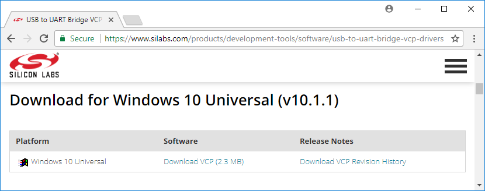
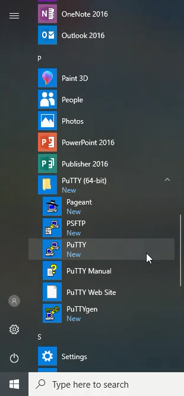

In this post, you'll learn how to install MicroPython on an ESP32 microcontroller. Micropython is a port, or version of Python designed to run on small, inexpensive, low-power microcontrollers. Examples of microcontrollers that MicroPython can run on include the pyboard, the WiPy and ESP8266-based boards like the Adafruit Feather Huzzah. Also, MicroPython can be installed on ESP32-based microcontrollers - and that's what this post is about.
If you want to know more about MicroPython, you can read about it in this post and check out the MicroPython Main Page and the MicroPython Documentation
- Prerequisites
- Download the firmware
- Create a virtual environment and install esptool
- Install the SiLabs driver for the CP210x chip
- Connect ESP32 microcontroller to computer
- Confirm the ESP32 is connected in the Windows Device Manager and determine the COM Port
- Install MicroPython with esptool
- Download and install PuTTY, a serial monitor
- Use PuTTY to send commands to the ESP32
- Run a few commands to turn the built-in LED on and off
- Going Further
Prerequisites
Before you can install MicroPython on an ESP32 microcontroller, there are a couple of prerequisites:
- a computer with a USB port and internet connection
- an ESP32 microcontroller
- a USB cable to connect the ESP32 microcontroller to your computer
- the Anaconda Distribution of Python installed on your computer
We will install MicroPython on our ESP32 microcontroller with our computer. This computer can be Windows10, MacOS, or Linux. These instructions are written assuming you have a Windows 10 computer, but the same general steps can be used on other operating systems. Your computer needs to be connected to the internet.
You'll need an ESP32-based microcontroller. There are a couple of different varients. Boards you could use include the Adafruit HUZZAH32 – ESP32 Feather Board and the HiLetgo ESP-WROOM-32 ESP32 ESP-32S Development Board found on Amazon. This tutorial assumes you have one of these development boards that has a USB port on it.
You also need a USB cable to connect your ESP32 microcontroller to your computer. Both the Adafruit Feather Huzzah 32 board and the HiLetgo ESP32 board board use a micro-USB connector. Therefore, you need a micro-USB to USB-A (regular USB) cable. The cable needs to be a USB data cable and not just a USB charging cable.
Make sure the micro-USB cable is a data cable. If the ESP32 isn't recognized by your computer (and the SiLabs driver is installed) try a different USB cable.
This type of cable is common to many older Android phones and tablets. If you don't have a micro-USB to USB-A cable, you can buy one at Adafruit or Amazon.
Python needs to be installed on your computer so that you can use a command-line program called esptool. I suggest you download and install the Anaconda Distribution of Python. You can also download Python onto your computer from Python.org. See this post to learn how to install the Anaconda distribution of Python on Windows.
Now that we have our prerequisites setup, it's time to download the MicroPython firmware for our ESP32 microcontroller.
Download the firmware
The first step to installing MicroPython on an ESP32 microcontroller is to download the MicroPython firmware from micropython.org.
Click on the DOWNLOAD link at the top of the page.

On the downloads page, scroll down the page until you get to the Espressif ESP-based boards section.

Select the Generic ESP32 module. This brings you to the page containing Firmware for Generic ESP32 module
Scroll down and select the most recent .bin file. In the picture below, that is esp32-20210312-unstable-v1.14-108-ge98ff3f08.bin.
Click on the link to the .bin file. Save the file to your Downloads folder.
After the .bin file downloads, you should be able to see it in your Downloads folder.
Great! We've got the ESP32 firmware .bin file saved on our computer. Next, we need to install a Python package called esptool so that we can move the firmware onto our ESP32 microcontroller.
Create a virtual environment and install esptool
Now that the .bin file is download, the next thing we need to do is install a command-line tool called esptool. esptool is a Python package that we can run from the Anaconda Prompt or a terminal to flash our firmware onto our ESP32 microcontroller. Before we install esptool, let's first create a virtual environment for our ESP32 work. The commands below assume you are using the Anaconda distribution of Python and the Anaconda Prompt for your terminal. Using the MacOS or Linux terminal and Python's venv module is another option.
Go to the Windows Start Menu and type Anaconda

Open the Anaconda Prompt and type the command below to create a new virtual environment called esp32. Note that the > prompt character doesn't need to be typed. > is included to represent the terminal prompt, not as a character to type.
> conda create -y -n esp32 python=3.8
After the virtual environment is created, it needs to be activated before we install esptool. Activate the esp32 virtual environment we just created with the command below. Note that after the activation command is entered, (esp32) appears before the prompt. This means the esp32 virtual environment is active.
> conda activate esp32
Once the esp32 environment is activated (you can see (esp32) before the prompt), use the command below to install esptool.
> python -m pip install esptool
You can confirm the installation of esptool by typing the command below. The result should be the version of esptool that you installed.
> esptool version
esptool.py v3.0
3.0
Now that esptool is installed, we need to install a driver to make sure our computer recognizes our ESP32 microcontroller when we connect it.
Install the SiLabs driver for the CP210x chip
Before we can connect our ESP32 microcontroller to our computer, we need a specific driver installed. For my Windows 10 laptop to see my ESP32, the CP210x USB to UART Bridge VCP driver needs to be downloaded from SiLabs and installed. This is quick and easy but does require admin privileges.

Now, we can connect our ESP32 microcontroller to our computer.
Connect ESP32 microcontroller to computer
Let's review the steps we have completed so far:
- downloaded the firmware .bin file into our downloads folder
- created a virtual environment using the Anaconda Prompt
- installed esptool using the Anaconda Prompt
- installed the SiLabs CP210x drivers
The next step is to connect the ESP8266 microcontroller to the computer. Connect one end of the USB cable to the microcontroller and connect the other end of the cable to a USB port on your computer. Note that it does make a difference which way is up for both sides of the USB cable.
Now we need to make sure that our computer can "see" our ESP32.
Confirm the ESP32 is connected in the Windows Device Manager and determine the COM Port
You should be able to see the ESP8266 in the Windows Device Manager when the ESP32 is connected to your computer. You can open the Windows Device Manager from the Windows Start Menu.

In the Windows Device Manager, look in the Ports (COM & LPT) section. You should see something like Silicon Labs CP201x USB to UART Bridge (COM4). Make note of which COM# is in parenthesis after UART Bridge. We'll need this COM# in the next step.

If you can't see the Silicon Labs CP201x USB to UART Bridge (COM4) entry in the Windows Device Manager, make sure the SiLabs driver is installed and try a different USB cable.
After the ESP32 is connected to your computer and you know which COM# it corresponds to, you can close the Windows Device Manager and move back to the Anaconda Prompt. It's time to install MicroPython on our ESP32!
Install MicroPython with esptool
Everything should now be in place. Let's review our steps so far:
- Downloaded .bin firmware file from the MicroPython downloads page
- Confirmed the .bin file is in our Downloads folder
- Created a virtual environment using the Anaconda Prompt
- Activated the virtual environment
- Installed esptool (into the virtual environment)
- Confirmed esptool was installed with
esptool version - Installed the SiLabs CP210x driver
- Attached the ESP32 to the computer with a USB cable
- Confirmed the ESP8266 was connected in the Windows Device Manager
- Determined which COM# Port corresponds to the ESP32
Now the only steps left are to install MicroPython on our ESP32 and confirm that MicroPython works. We are almost there.
Go back to the Anaconda Prompt and make sure the (esp32) virtual environment is active. Remember in the commands below, you do not need to type >. The > character is shown to indicate the Anaconda Prompt.
Navigate the Downloads folder:
> cd Downloads
You can run the dir command in the Anaconda Prompt to see the contents of the Downloads directory. This will print out the directory name and list the directory contents.
> dir
On the MicroPython ESP32 firmware downloads page, we can see the commands we need to run to install MicroPython on our ESP32:
Use the command below to erase the flash memory on the ESP32. Make sure to modify COM4 to correspond to the COM# from the Windows Device Manager.
> esptool --chip esp32 --port COM4 erase_flash
Now it's time to write the .bin firmware file to the flash memory on the board using the write_flash command. Make sure to use the exact .bin firmware file name you see in the Downloads directory. The port has to be set as the port you found in the Windows Device Manager. ---baud is the baud rate or upload speed. I found that --baud 460800 works just fine. Make sure the .bin firmware file name is correct. It is easy to mistype. The latest version may not be esp32-20210312-unstable-v1.14-108-ge98ff3f08.bin. You can start typing the .bin file name and then use the [TAB] key to auto-complete the rest of the filename.
> esptool --chip esp32 --port COM4 --baud 460800 write_flash -z 0x1000 esp32-20210312-unstable-v1.14-108-ge98ff3f08.bin
Congratulations! MicroPython should now be installed on your ESP32 microcontroller. To make sure the MicroPython installation was successful, we'll connect to our ESP32 using a tool called PuTTY.
Download and install PuTTY, a serial monitor
Now that Micropthon is installed on our ESP32 microcontroller, we can communicate with our ESP32 over a serial connection. Windows 10 doesn't have a built-in serial monitor (like screen on MacOS and Linux). So we need to download and install PuTTY. PuTTY is a lightweight SSH and serial client that works on Windows. PuTTY allows us to send and receive commands between our computer and our ESP32 microcontroller. PuTTY can be downloaded here. PuTTY is pretty lightweight. The download and installation are pretty quick.
Use PuTTY to send commands to the ESP32
Ensure the ESP32 microcontroller is connected with a USB cable and make sure you can see the ESP32 in the Windows Device Manager. Then use PuTTY to connect to the board over serial.
Search for PuTTY in the Windows Start Menu.

You can't connect to the ESP32 over SSH. You need to select the Serial radio button below the header Connection type: near the top of the PuTTY window to connect to your ESP32.
In the PuTTY window, make sure to specify the correct COM# port in the Serial line box and include 115200 baud in the Speed box.
MicroPython runs at 115200 baud- other baud rates will lead to junk characters in the serial monitor.

Now click [Open]. If you see >>> the MicroPython REPL (the MicroPython prompt) is running and the ESP32 is working! This version of Python isn't running on your computer, it's MicroPython running on the little ESP32 microcontroller! Sometimes you might have to type [Enter] or [Ctrl-D] to get the >>> REPL prompt to show up. A few times I needed to close PuTTY, unplug then replug the board and try PuTTY again. Many ESP32 microcontrollers have a tiny little black RESET button that can be pressed to restart the board. If you can't connect to the ESP32 with PuTTY, you can try pressing the RESET button.
At the >>> MicroPython REPL prompt try the following commands:
>>> print('MicroPython for Engineers!')
MicroPython for Engineers
>>> import sys
>>> sys.platform
'esp32'
Run a few commands to turn the built-in LED on and off
Let's celebrate! Micropython is running on our ESP32 microcontroller!
If the commands above worked, you can try and turn the built-in LED that's on many ESP32-based boards to turn on and off.
On most ESP32 microcontrollers, the built-in LED is connected to Pin 2
At the MicroPython REPL (in the PuTTY window), try the commands below:
>>> from machine import Pin
>>> p2 = Pin(2, Pin.OUT)
>>> p2.on()
>>> p2.off()

Going Further
In this post, we installed MicroPython on an ESP32 microcontroller. After MicroPython is installed, you can use a tool like ampy to move .py-files onto the board. You can program your ESP32 to do a wide variety of things. Some project ideas are below:
- Connect an LED to the ESP32 and blink the LED on and off using a for loop
- Connect a sensor to the ESP32 and read the sensor using the ESP32's built-in analog-to-digital converter (ADC)
- Connect the ESP32 to your WiFi network and turn the ESP32 into a remote weather station
I hope you had fun installing MicroPython on your ESP32.
Now get out there and write some MicroPython code!